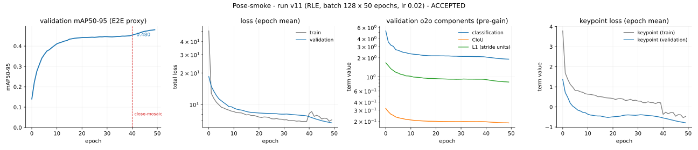

🕺 Keypoints — lucid-yolo n¶
Finds each person and the location of each of their joints: a box, a score and
Kpoints per object — here COCO's 17 human-pose points.
⚡ At a glance¶
| Task | keypoint detection: a box, a score and K points per object; this checkpoint is K = 17, COCO's human-pose schema |
| Data | COCO 2017 person_keypoints, 640 px |
| Size | n scale, 2.378M parameters, 5.514 GFLOPs |
| Result | OKS AP and box mAP50-95 on COCO val2017, both decode paths — see Evaluation |
| Release | v0.5.0, Pose-smoke tier, accepted at roadmap 125 on 2026-08-25 on the mechanism-claim evidence in RESEARCH_LOG.md and the acceptance table in the reproduction report |
| Try it | keypoints demo notebook |
| Weights | not published (D14) |
💡 Motivation¶
A box says where a person is; keypoints say where their nose, shoulders, elbows, wrists, hips, knees and ankles are. The task adds a third point-regression stem to the same detector and trains it with RLE — a normalizing-flow likelihood over the residual rather than a fixed distance loss — whose claim this run tests against a flow-free control.
The task is keypoints; human pose is one instantiation of it. K is a constructor argument the way the class count is — nothing in the head, the loss or the decode path knows what a point means, and the project's own wiring gate runs a 7-point synthetic symbol schema (R21) rather than a human one. This card describes the checkpoint that trained on COCO's 17-point person schema, so everything below is stated in pose terms because that is what this particular model learned — not because the architecture is pose-specific. That checkpoint is not distributed: releases publish no weights (D14), so "this checkpoint" throughout this card names a run whose artifacts are the numbers and the recipe, never a file you can fetch.
Where the genericity stops. K generalizes the model; it does not generalize the protocol. Scoring a schema under OKS needs a per-point sigma vector and the left/right pairs a horizontal flip must swap, and K supplies neither. R12 publishes exactly one sigma table — the 17 human values, derived from measured annotator standard deviations — and this project adds a single uniform fallback at R12's median for schemas that have no annotator to derive variance from (A67), which is an honest default rather than a general derivation; an OKS quoted under it is not comparable to a published COCO pose OKS despite sharing a scale. The flip pairs are read off the annotation file's own keypoint names (_build_keypoint_flip_pairs, data/coco.py), which means a COCO file that names its points supplies them, a file that does not gets "mirror coordinates only", two categories declaring different name lists is a hard error, and a YOLO root never supplies them at all. The shipped scorer says as much by refusing: lucid-eval's pose path checks the checkpoint's num_keypoints against 17 and rejects any other K rather than scoring it against a schema it does not share (eval/pose_eval.py) — point i of a different schema's prediction is not point i of COCO's annotation, and R12's sigmas measure annotator variance on joints that are not the ones being predicted. Training a new K is a flag; scoring it is a modelling decision you own, and the tooling makes you own it explicitly.
🧭 Use cases¶
Intended. Reproduction research: verifying RLE's mechanism claim against a non-flow control, and serving as a readable from-scratch implementation of a normalizing-flow keypoint loss composed onto an NMS-free detector. The e2e path is the interesting artifact, as for the other three tasks — points come out of a forward containing no suppression op.
Walk-through. The pipeline this card describes — data, a short fit, lucid-eval, predictions drawn over the ground truth — runs end to end in the keypoints demo notebook, short enough for a Colab session and not a reproduction of the numbers here.
Not intended. Any operational use, and this is a stronger statement than for the other three tasks — see Ethical considerations below. This is a smoke-tier reproduction at the smallest scale, one seed, evaluated on exactly one benchmark, with an e2e OKS AP of 0.27 on a single category. Production use of any kind, safety-critical or rights-affecting decisions, biometric identification, activity or gait recognition, surveillance of any kind, or any deployment where an OKS AP of 0.27 would be mistaken for a reliable perception system.
📇 Model details¶
| Developed by | Independent reproduction, single operator; see PROVENANCE.md |
| Model type | Single-stage anchor-free keypoint detector, K generic — the same DFL-free dual detection head as the other three tasks, with a third point-regression stem (R14) predicting (x, y) offsets and a per-axis uncertainty, integrated over a hand-written normalizing flow (RLE, R14 Eq. 12) rather than a fixed loss. This checkpoint is that architecture at K = 17, COCO's human-pose schema |
| Scale | n — 2.378M parameters, 5.514 GFLOPs at 640×640, num_classes=1. Measured, not gated. A published table does exist — R1 Table S10 lists 2.9M / 7.5G for the paper's n pose model (this card said otherwise until 2026-09-17; D22) — and at its protocol (640 px, 1 class, 17 points, the full two-branch model as every other size gate counts it) this model measures 2.524M / 5.514G, 13.0% and 26.5% under: the point stem is several times narrower than the paper's at this scale (A77), and no gate ships until a width is chosen against the table, as the angle stem's was against Table S11. Holding num_classes fixed at 1 against an otherwise-identical detector isolates the point stem's own cost: +0.055M params (+2.4%), +0.124 GFLOPs (+2.3%) |
| Input | RGB, letterboxed to 640×640, float32 in [0, 1] |
| Output | Per detection: box, score, class, and 17 (x, y) keypoints in COCO's human-pose order (nose, eyes, ears, shoulders, elbows, wrists, hips, knees, ankles), each inverse-letterboxed into the original image (A10). Same two decode paths as the other three tasks — NMS-free end-to-end and one-to-many with NMS — with points gathered by anchor index, never re-ranked separately (eval/coco_eval.py::gather_keypoints) |
| Point decode | decode_keypoints composes the head's raw offsets with the anchor centre and stride, unbounded by construction — a point is representable anywhere in the input, including off-canvas (A70) |
| Version | Run v11 checkpoint keypoints_n_epoch=49-step=46250.ckpt, 2026-08-24, trained under 0.5.0.dev1 |
| License | Apache-2.0 (code and report). Weights derive from COCO 2017's person_keypoints annotations — see Licensing below |
| Paper | Pose objective per the YOLO26 paper, arXiv:2606.03748 (R1) sec. 3.4.2 — reproduced in part: the RLE term (R1 Eq. 10–11), transcribed from its origin, Li et al., Human Pose Regression with Residual Log-Likelihood Estimation, arXiv:2107.11291 (R14), without the OKS term R1 composes it with (A75; available since WP-178 at oks_gain = 0.0, so this checkpoint's objective is unchanged); detection backbone/neck/head per R1. Independent implementation; not affiliated with, endorsed by, or derived from Ultralytics, the RLE authors, or their codebases |
The keypoint objective replaces nothing — box and classification terms are unchanged, and the point term rides beside them at keypoint_gain = 1.0 (A68). RLE's own trainable-weight loss, a 6-layer RealNVP flow over the standardized residual, is a submodule of the training module rather than a stateless function (WP-123): it is the only loss in this project carrying parameters. A Laplace-NLL control with the flow term removed (WP-135) exists as a keypoint_loss switch on the training module, defaulting to rle; the checkpoint this card describes trained under that default. That control is not this model — see WP-125's acceptance run in ../work_packages/wp-125.md#wp-125 for the paired comparison.
Only a task="keypoints" module carries any of this. A "detect"/"segment"/"obb" checkpoint's state dict is untouched by the flow, the point stem, or the switch — the same "opt-in changes nothing else" property WP-087 established for the mask head.
🗂️ Training data¶
COCO 2017 person_keypoints_train2017 — the person category only, 17-point human-pose annotations under CC-BY-4.0 with images under their original Flickr terms. No other data; no pretraining (D2: no Objects365 initialization).
The same composition limits detection.md/segmentation.md record for COCO's person category apply here with more force, since this task's entire training signal is that category: web photography skewed toward particular geographies and contexts, no documented demographic balance, and no fairness evaluation across subgroups has been run. A point annotated v=1 (labeled but occluded, R12) supervises the model to infer a location it cannot see (A66) — the model is trained, by design, to guess where an occluded body part is.
🏋️ Training procedure¶
| Recipe | batch 128, 50 epochs (46,250 steps), MuSGD (w_muon 0.5 / w_sgd 0.5), lr 0.02 with 3-epoch warmup then linear decay to lr0 × 0.01, weight decay 5e-4, momentum 0.95, gradient clip 10.0 |
| Loss | detection unchanged — per branch CIoU 7.5 / classification 0.5 / L1 6.0 (stride units), Progressive branch weight 0.8 → 0.1 — plus RLE's flow-plus-Laplace NLL at keypoint_gain = 1.0 (A68), formed in the assigned box's own per-axis frame (A71) |
| Keypoint supervision | v=0 excluded, v∈{1,2} both included at equal weight — occlusion is exactly the case a regression model must learn to infer from context, and COCO's own OKS protocol scores against v≥1 regardless of visibility (A66) |
| Assignment | TAL (alpha 1, beta 6) with STAL small-target surrogates, one assignment shared by every term including the keypoint one |
| Augmentation | mosaic p=1.0 (disabled for the final 10 epochs), fused affine+letterbox, size-aware mixup and copy-paste, HSV jitter, horizontal flip p=0.5 with COCO's 17-point left/right pairing (A64) — the first tier-scale run to train with that pairing actually wired in, rather than through overfit_micro.py --task keypoints's augmentation-off gate |
| Precision / seed | bf16-mixed, seed 0, deterministic: true |
| Hardware | one unrecorded Colab GPU (default_root_dir under /content/); wall clock 13:30→20:36 on 2026-08-24, about 8m30s an epoch, derived from artifact timestamps rather than logged |
| EMA | decay 0.9999, tau 2000 |
The wiring gate that precedes any COCO launch is scripts/overfit_micro.py --task keypoints: 100 images, 548 instances, 1 class, 100 epochs at 320 px, decoded through the deployed one-to-one path. It measures train OKS AP 0.5820 ± 0.05 against a 0.30 floor (goldens/gpu/overfit_micro_kp.json, resealed by WP-209 on an A100 under torch 2.9.1; the figure first stood at 0.3357 in WP-132, rose to 0.5747 once WP-169 fixed the assigner, as WP-167 measured, fell to 0.4919 with WP-183's dense box terms, and reads 0.5820 on the same GPU model with no change to the per-step arithmetic, inside the 0.49–0.73 spread a seed sweep measured on unchanged code) — a floor set low relative to the sibling gates' because OKS at A67's uniform sigma is a cliff on symbols a few dozen pixels across, not because the loop learns less.
📈 Training curves¶

Run v11, four panels. The validation box mAP50-95 (the same E2E proxy the other three tiers log); epoch-mean loss totals; the one-to-one branch's pre-gain box/classification/L1 components; and the RLE keypoint term, train and validation.
How the run went, and what the curves show, is discussed in the reproduction report.
📊 Evaluation¶
COCO val2017, all 5000 images, person_keypoints_val2017 ground truth, at 640 px through lucid-eval, one forward per batch decoding both paths. Boxes are scored by faster_coco_eval's COCOeval_faster; points by the same engine's iouType="keypoints" protocol at R12's 17-value sigma table. EMA weights; raw weights were not evaluated for this run.
| path | box mAP50-95 | box mAP50 | box mAP75 | OKS AP | OKS AP50 | OKS AP75 |
|---|---|---|---|---|---|---|
| E2E | 0.5030 | 0.7683 | 0.5323 | 0.2738 | 0.6094 | 0.2138 |
| NMS | 0.5119 | 0.7764 | 0.5417 | 0.2688 | 0.6066 | 0.2042 |
The e2e row is the one comparable to the training run's own val/mAP (box branch) and val/oks_mAP (point branch, WP-137) — the same convention detection.md/segmentation.md state for their own tables. Unlike box mAP, where nms scored marginally higher here, the point branch reverses: e2e OKS beats nms OKS on every threshold, though the gap (0.005 AP) is small enough that a second seed could plausibly move it either way.
Not comparable to R1 Table 9's mAP=63.0. That figure is the paper this project reproduces — not, as this card said until 2026-09-17, "a different paper" (D22) — but it is YOLO26s at full budget under the full objective, OKS + RLE at (24, 1), and Table S10 puts the n scale this run trained at 57.2. This run is n, 50 epochs, RLE alone (oks_gain = 0, A75), on a point stem narrower than the paper's (A77); its acceptance criterion was never a pose figure — see Acceptance below.
⚠️ Limitations¶
Smoke tier, one category. 50 epochs at the smallest scale, one seed, one benchmark, person only. An OKS AP of 0.27 is well below a well-trained pose model's range, and this run was never intended to close that gap — WP-125's acceptance is RLE's mechanism claim against a non-flow control, not an absolute pose figure.
Box branch and point branch are trained jointly but scored separately, and neither bounds the other. val/mAP (box) and val/oks_mAP (point) log beside each other, not one instead of the other (WP-137) — a checkpoint could in principle detect people well and localize their joints poorly, or the reverse, and the two curves would not say so to each other.
Uniform-weight visibility policy is untested against the alternative. v=1 (occluded) and v=2 (visible) supervise identically (A66); no ablation here measures whether down-weighting occluded points would change the result.
The gain is un-tuned. keypoint_gain = 1.0 is the deliberately unoptimized starting point (A68) — this run is evidence the value does not swamp or get swamped by the detection objective, not evidence it is well-balanced. No sweep has run.
One flow, not measured against two. The one-to-many and one-to-one branches share a single RLE flow (A69) rather than training one each; whether that matters is untested, and the overfit gate cannot tell, since a 100-image memorization run drives both branches to the same near-zero residual.
One device, and reproducibility narrower than deterministic: true reads. This tier trained on a single unrecorded Colab GPU; no run in this project has spanned more than one accelerator. Keypoint validation now accepts DDP and gathers complete image records, deduplicated by dataset identity before OKS scoring (WP-213). Its multi-device check is a CPU gloo two-process test; no two-GPU run was made, and a real multi-GPU check remains outstanding. default_determinism (cli/train.py) resolves deterministic to "warn_only" whenever MPS is the auto-picked accelerator — MPS ships no deterministic kernel for some backwards this model hits — so an Apple-silicon run is reproducible only up to those kernels while CPU and CUDA keep strict True. Separately, the seed reproduces a run only at the same --data.num_workers: 0 workers replays one augmentation stream byte for byte, N workers replays a different one re-seeded per worker and per epoch (WP-079). Both are determined by seed; 32 workers does not reproduce 0.
🤝 Ethical considerations¶
This model predicts the full skeletal pose of every detected person in an image — not a box, not a silhouette, but the location of each joint. That is a materially more identifying and more sensitive readout than either the detector's box or the segmenter's mask: gait, posture and body configuration are usable for re-identification and activity inference in ways neither of those outputs directly supports. Any deployment reading pose from people carries surveillance, tracking and biometric-inference implications well beyond what this project has assessed, and none is planned. The intended-use section above is a boundary, not a disclaimer: the model has no evaluation supporting use on real people outside this benchmark, and an OKS AP of 0.27 means roughly three in four joints are not usefully localized at COCO's own strict thresholds.
Failure modes are unbounded in the sense that matters — no calibration study exists, so per-point scores should not be read as confidence, an occluded joint is trained to be guessed rather than flagged as unknown (A66), and the model gives no signal when it is operating outside its training distribution or on a body configuration COCO's person category under-represents.
📜 Licensing and provenance¶
Code and this report: Apache-2.0. Weights derive from COCO 2017; no trained weights are published (D14).
Clean-room statement. No file, configuration, weight, or code fragment from any Ultralytics repository, package, documentation site, or released checkpoint — nor from any RLE reference implementation — was opened, downloaded, imported, or consulted at any point in this project's history. Every design input traces to a paper, its cited primary literature, a registered assumption, or — for diagnosis only, never copying — a permissively licensed independent implementation registered under D13/ADR-004. The audit trail is PROVENANCE.md; the standing prohibitions are AGENTS.md sec. 7.
🔖 Citation¶
This reproduction has no publication. Cite the papers it reproduces:
The keypoint loss follows RLE: